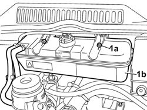
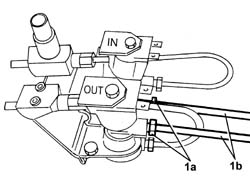
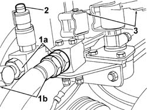
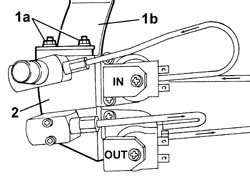

1043B42 PRESSURE REGULATON FOR GPL SUPPLY COMPLETE WITH DELIVERY AND RETURN LINES FROM INTERMEDIATE CONNECTOR R R
- Path
- Procedures > 10 ENGINE UNIT > 1043 GPL TANK AND PIPES > 1043B GPL FUEL CIRCUIT PIPES > 1043B42 PRESSURE REGULATON FOR GPL SUPPLY COMPLETE WITH DELIVERY AND RETURN LINES FROM INTERMEDIATE CONNECTOR R R
- Kind
- repair procedure (removal / refitting; the operation number is the code)
- Applies to
- engines: 2.0 16V; all production periods
- Interactive page
- https://sloeber94.github.io/elrnDB-fDct/en/#/244002663
Applies to: engines: 2.0 16V; all production periods
 Removing
Removing
 Refitting
RefittingDrain the LPG supply and return pipes from the tank to the solenoid valves / G4-G5 and the supply pipe to the injectors,following the instructions in the procedure:
Op. 1043A02 LPG SYSTEM LINES PIPE DRAINING OPERATIONS
Position the vehicle on the lift.
Disconnect the negative battery terminal.
1. Undo the nuts (1a) and move the engine coolant reservoir (1a) away from the work area, leaving the pipes connected.

Applies to: engines: 2.0 16V; all production periods
1. Undo the connectors (1a) and disconnect the LPG supply and return pipes (1b) from the tank.

Applies to: engines: 2.0 16V; all production periods
1. Undo the connectors (1a) and disconnect the LPG supply and return pipes (1b) to the injectors.
2. Disconnect the electrical connection frrom the pressure sensor.
Description | Connector | |
|---|---|---|
2 | LPG pressure sensor | K053 |
3. Disconnect the electrical connections for the LPG cut out solenoid valves.
Description | Connector | |
|---|---|---|
3 | LPG cut out solenoid valves | L063 |
Move the electrical wiring aside.

Applies to: engines: 2.0 16V; all production periods
1. Undo the fixing nuts (1a) on the mounting bracket (1b).
2. Remove the solenoid valve assembly / G4-G5 complete with pipes.

Applies to: engines: 2.0 16V; all production periods
Refitting
RemovingFit the solenoid valve assembly / G4-G5 complete with pipes and secure it to the mounting bracket tightening the nuts to the recommended torque.
Value daNm | Fastening | Component | Ø | |
|---|---|---|---|---|
- | 1.1 | Nut | M6 X 1 |
Connect the electrical connections for the LPG cut out solenoid valves.
Description | Connector | |
|---|---|---|
- | LPG cut out solenoid valves | L063 |
Connect the electrical connection for the pressure sensor.
Description | Connector | |
|---|---|---|
- | LPG pressure sensor | K053 |
Fit the LPG supply and return pipes to the injectors ensuring they are in the position marked on their removal.
Tighten the connectors to the recommended torque.
Value daNm | Fastening | Component | Ø | |
|---|---|---|---|---|
- | 7 | Connector | M18 X 1.5 |
Fit the LPG supply and return pipes from the tank ensuring they are in the position marked on their removal.
Tighten the connectors to the recommended torque.
Value daNm | Fastening | Component | Ø | |
|---|---|---|---|---|
- | 1.5 | Connector | M10 X 1 |
Op. 1043A04 GPL SYSTEM AND PIPES CHECK FOR LEAKS
Position the engine coolant reservoir and secure it using the nuts.
Connect the negative battery terminal.
Remove the vehicle from the lift.